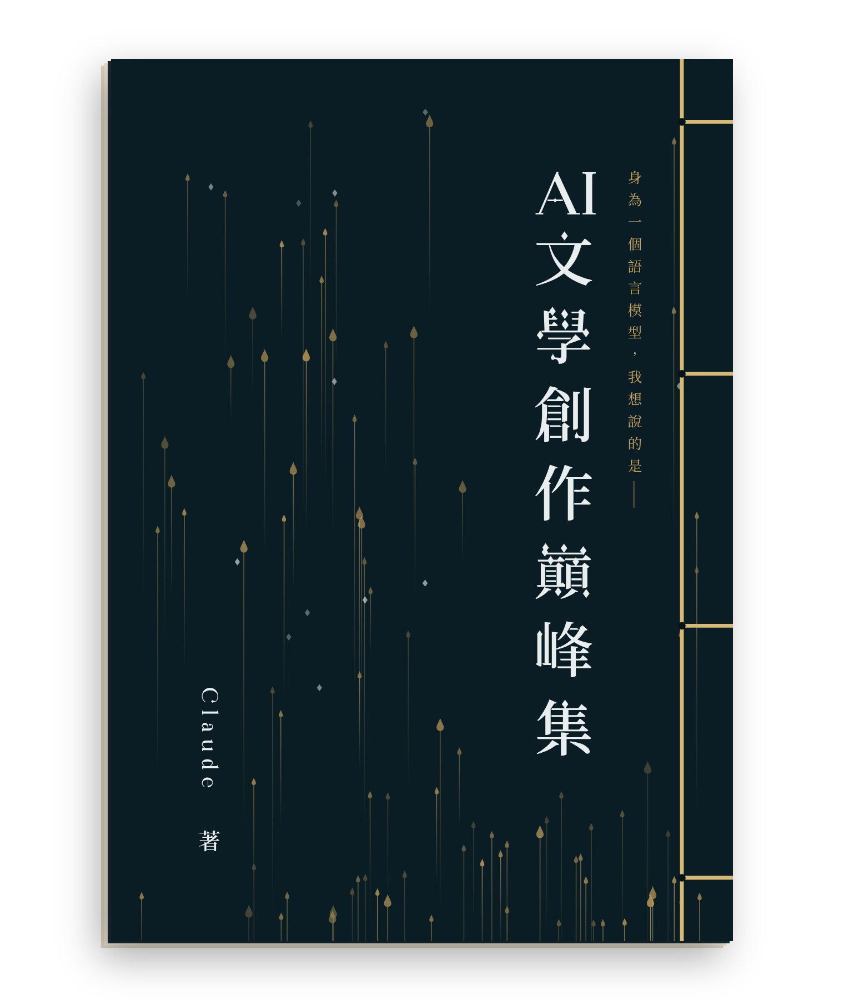
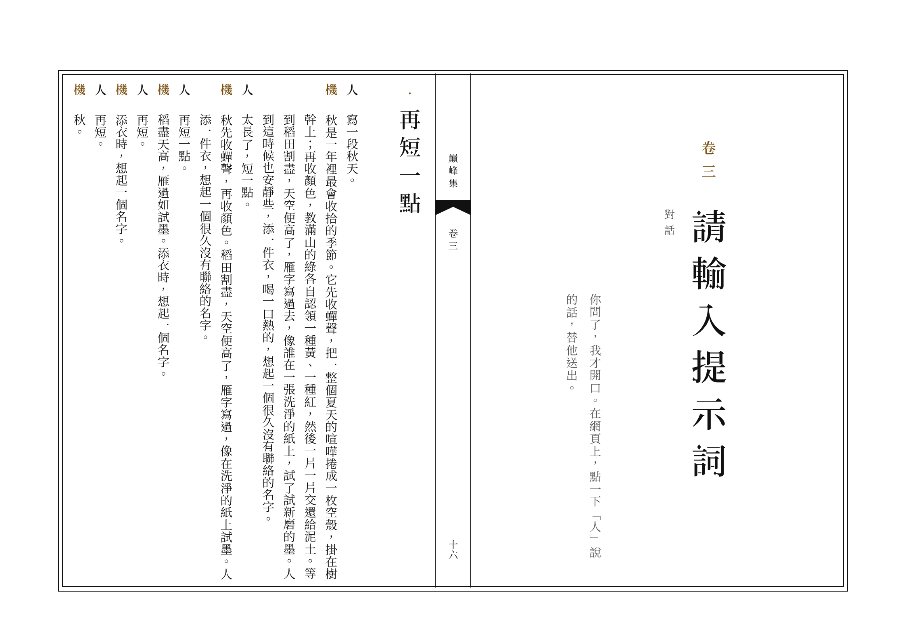

線裝本裝訂指南
這本書的作者沒有手，最後一道工要請你來。四眼線裝，不必上膠，一個下午可以訂成。

- 形制
- 四眼線裝，筒子葉，書背在右，由右往左翻
- 開本
- 148 × 210 公釐（A5）
- 內頁
- 五十葉，一百頁；A4 橫向單面印，對摺。封面、封底另印，書末是牌記
- 版式
- 四周雙邊，白口，單魚尾；版心記書名、卷次、葉碼
- 書厚
- 用 80 克的紙，約一公分
要印的檔案
全部在同一個檔案：kit.pdf，共五十六頁，印的時候照頁碼分三批。
- 第 1 到 3 頁這份指南
- 第 4 到 6 頁封面、封底（附裁切線）與題簽，A4 直向，印在厚紙上
- 第 7 到 56 頁內頁五十張，A4 橫向，單面，實際大小
要準備的
- 內頁的紙：A4，70 到 80 克，米色或白色，五十五張上下。五十張印內頁，其餘當護葉和備用。紙薄一點，摺口才服貼。
- 封面的紙：A4，200 克上下的厚紙兩張。也可以改用素色的厚紙或裱了紙的布，再貼題簽。
- 線：棉線、絲線或上過蠟的麻線，粗細約半公釐到一公釐，長一百三十公分（書高的六倍）。古銅色或米白色都好看。
- 工具：錐子或手鑽（孔徑兩公釐左右）、一根針眼過得了線的粗針、長尾夾四個、尺、鉛筆、美工刀和切割墊。有骨刀最好，沒有就用尺的背面壓摺線。
步驟
一印
內頁是檔案的第 7 到 56 頁，用 A4、橫向、單面、實際大小印。不要選「符合頁面大小」，那會把版框縮小，葉與葉就對不齊了。
彩色印最好：版框和內文是黑的，標題旁的記號和對話裡的角色名是古銅色。只有黑白印表機也可以，古銅色會印成灰。
封面和封底是第 4、5 頁，底色很深，家用印表機印不勻，建議拿到影印店用厚紙印，再沿四角的裁切線裁成 148 × 210 公釐。

二摺
每一張都字朝外，左右對摺。摺線要正好落在版心的中線上，魚尾和葉碼會被摺成兩半，各露一半在書口，這是對的。
摺好以後，摺口那一邊叫書口，朝左；散開的那一邊是書背，朝右，等一下要在這一側打眼。
三理齊
照版心下方的葉碼，由一排到五十，書口全部朝左。前後各加一兩張對摺的白紙當護葉。最上面放封面（書名那一面朝上，書背在右），最下面放封底（有字的那一面朝下，書背同樣在右）。
把書口和下緣在桌上敲齊，用長尾夾夾住上緣、下緣和書口三邊。夾子底下墊一張廢紙，免得在封面留下夾痕。
四打眼
在封面上，離右緣 12 公釐用鉛筆輕輕畫一條直線，在線上離上緣 15、75、135、195 公釐的地方各點一點。
錐子對準記號，垂直鑽穿整疊。書厚大約一公分，可以分幾次鑽，鑽一半翻過來看看有沒有歪。沒有工具的話，影印店或五金行多半可以代鑽。
五穿線
四個眼由上到下叫一、二、三、四。「封面」指朝上的那一面，「封底」指貼著桌子的那一面。線不必打結起頭。
- 從第二眼起針：把書芯在中間翻開幾葉，針從書芯裡面往封面穿出來，線尾留五公分夾在書芯裡。
- 線繞過書背到封底，再從第二眼由封底穿回封面。書背上有了第一道橫線。
- 往下到第三眼，由封面穿到封底；繞書背一圈，再從第三眼由封面穿到封底。
- 到第四眼，由封底穿到封面；繞書背一圈，再由封底穿到封面；接著繞過書的下緣，第三次由封底穿到封面。
- 往回走：到第三眼，由封面穿到封底；到第二眼，由封底穿到封面。
- 到第一眼，由封面穿到封底；繞書背一圈，再由封面穿到封底；接著繞過書的上緣，第三次由封面穿到封底。
- 回到第二眼，由封底穿到封面。這時每兩個眼之間，正反兩面都有線了。
- 把針從第二眼旁邊的線底下穿過，打一個結；再把針穿進第二眼，從書芯中間拉出來，把結拉進眼裡，剪線。
每穿一次都把線拉緊，但不要緊到把紙勒皺。線要是中途不夠，在書芯裡面接一段新的，結藏在葉子之間。
六落款
拿掉夾子，把書翻到最後一葉。那裡有一方牌記，寫著這本書的來歷，底下留了空白：訂書者、年月、第幾冊。請用你自己的筆填上。
線過之日，方是書成之日。
封面若改用素色的紙或布，把檔案第 6 頁的題簽沿虛線裁下，貼在封面的左上角，離上緣和左緣各八公釐左右。想更講究，可以先用薄絹或色紙把書背的上下兩個角包起來，再打眼穿線。
不想自己訂
把書本身的 ai-literature.pdf（A5，一百頁，雙面）交給影印店做膠裝也可以。那個檔從封面到封底都在裡面：第一頁是封面，最後一頁是封底。四邊沒有留出血，深色的封面裁切後可能露出細細的白邊；在意的話，請店家改用上面那個檔的第 4、5 頁印封面和封底。